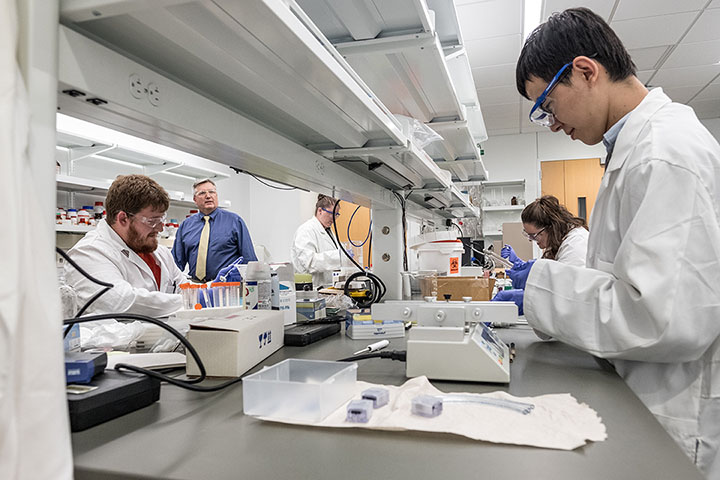

Informatics
In this page, we will describe 3 various programs that are offered at the University.
Aerospace Engineer
Aerospace engineers focus on the design, manufacture, and operation of flight vehicles. This includes military and civilian airplanes, missiles and rocket boosters, and spacecraft and surface rovers for planetary exploration. Courses
include
engineering science, math, information technology, and design. Students develop communication ability, teamwork skills, ethical standards and the ability to adapt to the rapidly changing aerospace profession.
Career Fields
- Government agencies
- Military
- Defense
- Aircraft design
- Aircraft mechanics
- Control systems
Engineering Schematics
Biomedical Engineering
Biomedical engineering creates the next generation of medical devices, technologies and methods supporting a healthy life.At the University of Arizona, biomedical engineering students get a cutting-edge look at new advancements in
medicine.
They are given the unique experience of being in a highly interdisciplinary department with diverse research opportunities, world-renowned faculty and dynamic focus areas. As a Research 1 Institution, the UA gives undergraduates
opportunities
to get involved in labs and research...
Career Fields
- Medicine or research
- Rehabilitation
- Equipment testing
- Medical devices
- Imaging and sensors
Biomedical

HTML Links
Informatics
Informatics is the study and practice of creating, storing, finding, manipulating and sharing information. While Informatics does concentrate on high-level computer science topics, it moves beyond the focus on computers alone to examine
computing in context.
Career Fields
- Software Development
- Programming
- Network Design
- Information Management
- Cloud Computing
Informatics
Program catalog